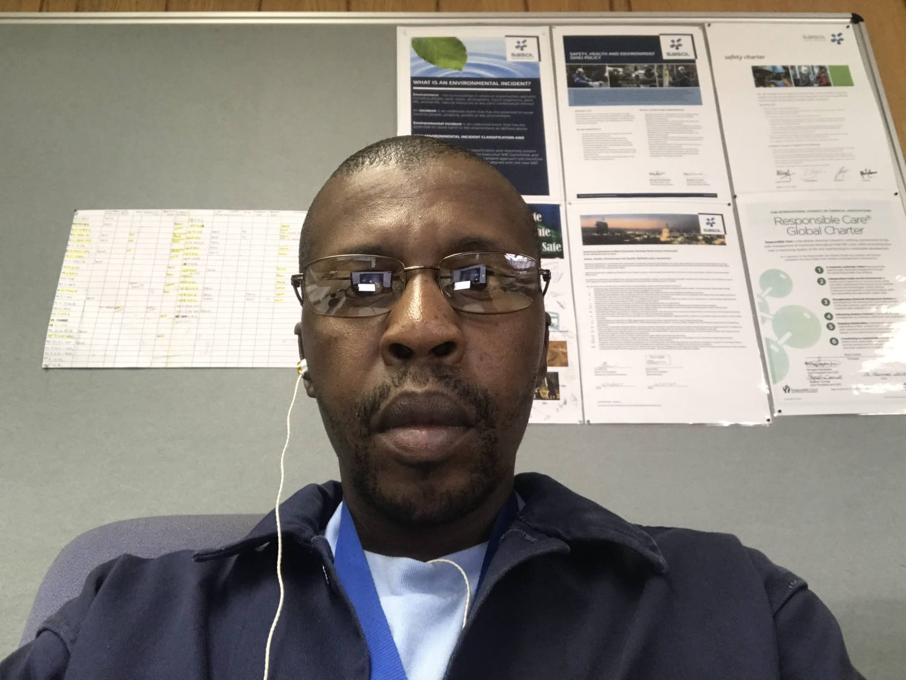

Mr SV Radebe is a experienced pressure vessel inspector, He has more than 10 years of experience in this indusrty. Mr Radebe is certified in pressure vessel inspector and qualified in welding inspector. Mr Radebe gained experience working at ESKOM power station, SASOL, and SAPREF where he perfomed inspection on pressure vessels and pipework
SPHATHALI INSPECTION was found in 2018, SPHATHALI Insp. And Services is a company comprising of a certified in-service Pressure Vessels inspector (CPV) & a qualified welding inspector (QC) trained at the SAIW and worked at various Eskom Power Stations, SASOL, SAPREF and other related industries performing statutory inspection on pressure vessels and pipework. Sphathali specializes mainly with executing and witnessing in-service Hydraulic and Pneumatic Statutory pressure test on Pressure Equipments (Vessels and Pipes) as required by the PER, MHS Act and Relevant health and safety standards. We also offer guidelines on the requirements of the MHSA, PER and SANS 347 with regards to compliance. We supply safety & control valves, pressure measuring gauges, welding equipments, PPE, welding inspection tools and we also supply skilled labor (QC and Artisans). We believe in providing value added services to our prospective clients with passion and inspiration from our respective attributes and disciplines. One of our goals at Sphathali.Inspection is Skills development. We want to ensure that skills transfer prevails, and we will empower the youth from previously disadvantaged communities through employment and training to be skillful
In 2020 they had their first successful shutdown at NATREF REFINERY in DURBAN
In 2023 ASTRON REFINERY in CAPE TOWN had a shutdown and they were invited and it was successful
To deliver safe, high-quality engineering inspection services, elevate safety standards and empowering youth coming from disadvantaged communities through skill development and employment opportunities
To be a global player in engineering services and help clients meet the requirements of the applicable regulation